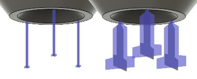

<div id="supportPropertyBar_macro_bar_size"><p>バーのサイズのプリセットから選択するか、カスタム値を指定します。</p>
<table class="tipTable" cellspacing="10">
<tr>
<td><center></center></td>
</tr><tr>
<td><center><p><b>バーのサイズのプリセットの例</b><br><em>厚さ 0.6 mm の小さいバーと、厚さ 3 mm の大きいバーです。</em></p></center></td>
</tr></table>
</div>